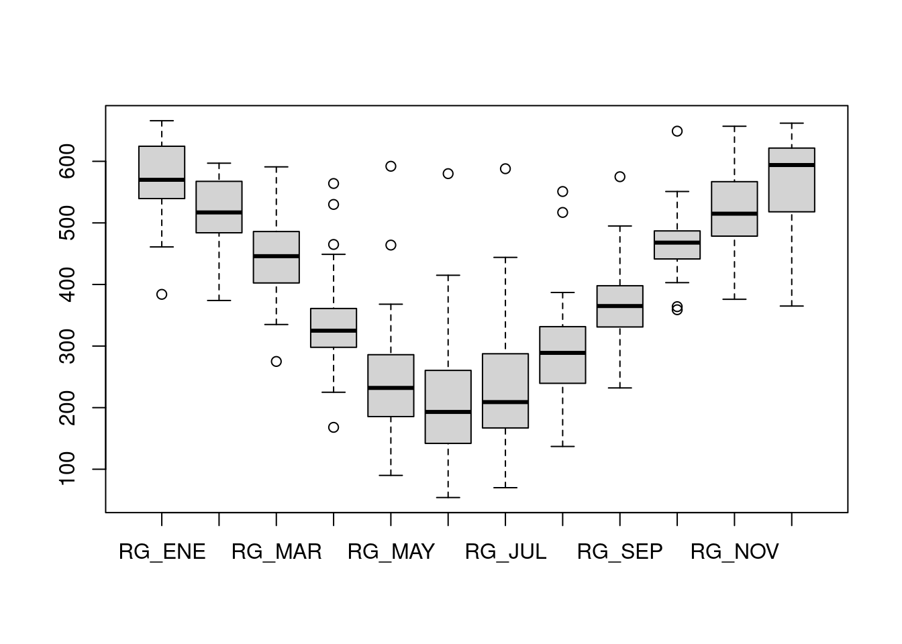
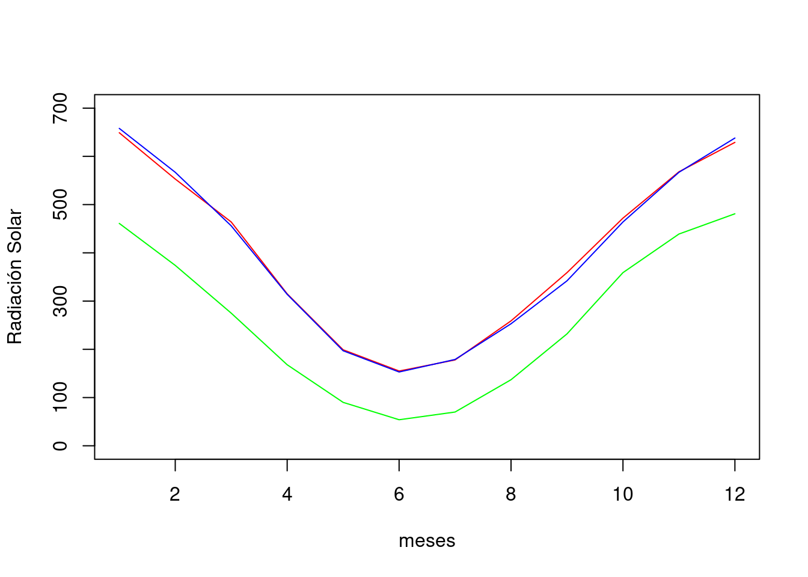
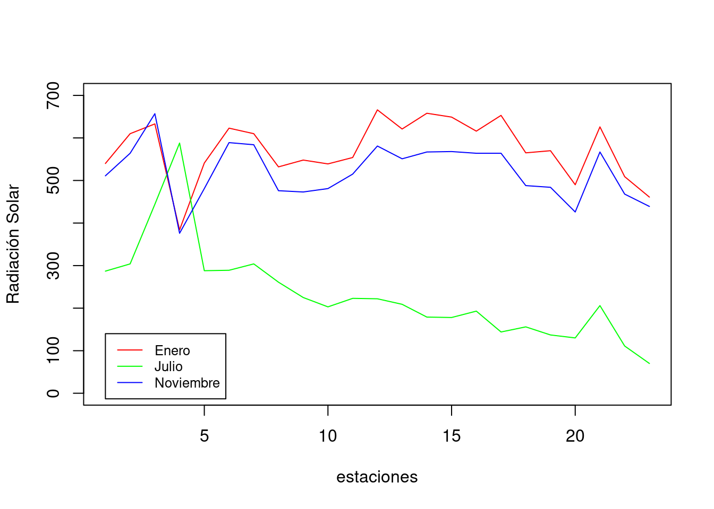
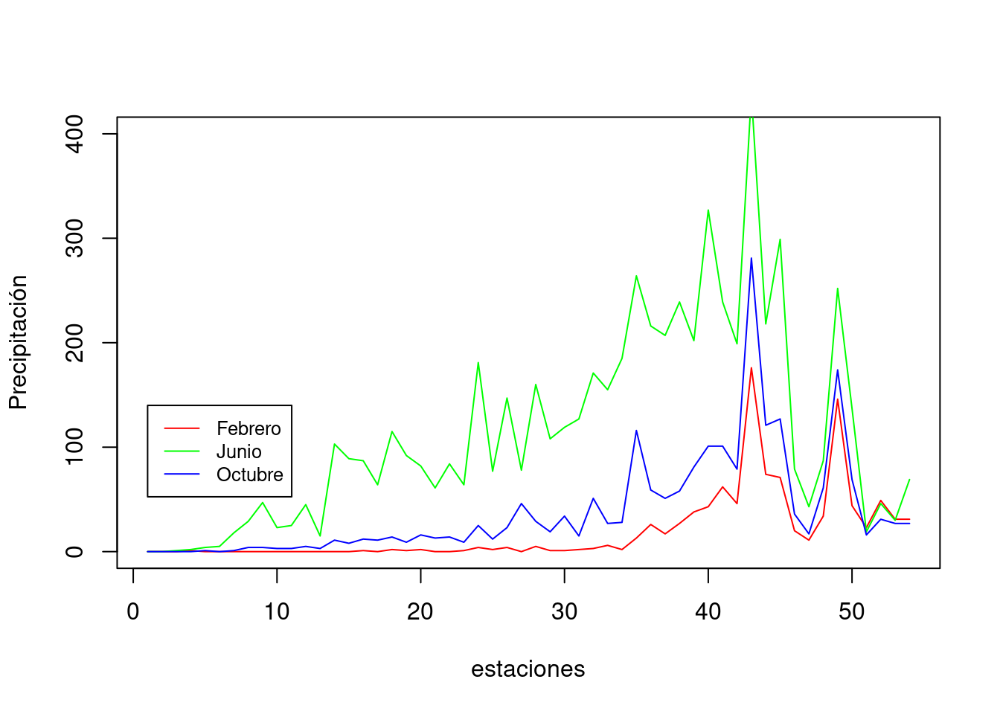

# Ejercicio 1:
# comentario explicando lo que se hace
{
Aca va el script que resuelve el ejericio 1
}Taller 2 (IMSE1017)
Datos climáticos con R
Descripción
En las primeras clases de la asignatura se ha empezado a trabajar con el software R, partiendo por conocer la sintaxis, la IDE RStudio, las estructuras y tipos de datos. En el primer taller trabajó con datos que vienen incluidos en los paquetes base de R como mtcars, aplicando funciones que permitan identificar los tipos de objetos y su estructura, además de realizar proceso de indexación para diferentes tipos de objetos (ej, data.frame, matrix, listas).
Objetivo del taller
Ser capaz de leer y hacer algunos análisis básicos con datos obtenidos desde una planilla excel.
Data
En el campus virtual, en la sección Actividades -> Talleres -> Taller2 se encuentra el archivo excel data.xlsx. Ésta planilla tiene cuatro hojas, debe trabajar con las dos primeras que corresponden radiación sola (hoja RS) y precipitación (PP).
¿Qué debe entregar?
Debeŕa utilizar RStudio para crear un script, en donde resolverá cada uno de los ejercicios. Debe utilizar los comentarios (#) para hacer una descripción del ejercicio e incorporar cualquier información que ayude a entender lo realizado. A modo de ejemplo:
Debe guardar el script con el nombre taller1_grupo{número_grupo}.R. Los datos los debe guardar en formato .csv, con nombre data_RS.csv y data_PP.csv, de acuerdo a como se indica más adelante en los ejercicios. Los tres archivos los debe subir en el campus virtual en la sección Actividades -> Talleres -> Taller2
Fecha de entrega
Viernes 30 de septiembre hasta las 8:00am
Ejercicios
En la clase del día 9 de septimbre resolvió y envío los primero cinco ejercicios que acá se indican, desde el septimo en adelante lo debe completar
Ejercicio 1
Exportar la hoja RS de la planilla data.xlsx a un archivo separado por comas (.csv) en donde se tenga la radiación solar para diferentes estaciones a lo largo de Chile para los meses entre enero a diciembre
Respuesta: en la carpeta ‘data’ se almacenó el archivo data_rs.csv. Por lo que la ruta relativa al archivo es ruta <- 'data/data_rs.csv.
Ejercicio 2
Leer el archivo de radiación solar y cargarlo a un objeto en R con el nombre data_rs.
Respuesta:
# Leer el archivo data_rs.csv con la función read.csv2. El archivo está guardado en la ruta 'data/data_rs.csv'. Se asignó al objeto data_rs en R.
data_rs <- read.csv2('data/data_rs.csv')
# el objeto data_rs ahora tiene los datos de radiación solar
#
# función "head" para ver sólo las primeras 6 filas.
head(data_rs) ESTACIÓN REGIÓN ALT LON LAT RG_ENE
1 ARICA CHACALLUTA ARICA Y PARINACOTA 58 -70.3333 -18.3333 540
2 IQUIQUE DIEGO ARACENA TARAPACA 52 -70.1833 -20.5333 610
3 CALAMA EL LOA ANTOFAGASTA 2270 -68.9 -22.4833 633
4 ANTOFAGASTA CERRO MORENO ANTOFAGASTA 135 -70.4333 -23.4333 384
5 CALDERA DESIERTO DE ATACAMA ATACAMA 204 -70.78 -27.27 541
6 COPIAPO CHAMONATE ATACAMA 291 -70.4167 -27.3 623
RG_FEB RG_MAR RG_ABR RG_MAY RG_JUN RG_JUL RG_AGO RG_SEP RG_OCT RG_NOV RG_DIC
1 525 530 449 363 286 287 322 379 464 511 535
2 571 555 465 368 298 304 347 417 513 564 604
3 588 591 530 464 415 444 517 575 649 657 662
4 429 529 564 592 580 588 551 495 442 376 365
5 497 443 360 278 265 288 341 402 453 481 514
6 597 476 362 294 256 289 358 453 551 589 623Ejercicio 3
Crear un gráfico de tipo boxplot que muestre la variación de la distribución de los datos de radiación mensual entre las estaciones, desde enero a diciembre.
Respuesta:
# para graficar se utiliza la función boxplot, como argumento se ingresa los datos seleccionando las columnas entre las 6 a la 17 que corresponde a los meses entre enero a diciembre
boxplot(data_rs[,6:17])
Ejercicio 4
Seleccionar tres estaciones del total, para cada una de ellas realizar gráficos de linea que permita comparar la variación de la radiación entre las estaciones.
Respuesta:
# la función sample permite tomar una muestra aleatoria
set.seed(987)
s <- sample(x = 1:23, size =3)
#guarda los datos de radiación solar de la primera estación de la
#muestra anteriro cuya posición se encuentra en el vector númerico
#"s". Selecciona las columnas 6:17 que corresponde a los meses entre
#enero a diciembre. El valor devuelto corresponde a un data.frame,
#por lo que se utiliza la función "as.numeric" para transformarlo en
#un vector númerico y así poder graficarlo.
data_rs_estacion1 <- as.numeric(data_rs[s[1],6:17])
# ahora lo mismo para la segunda y tercera estacion de la muestra
data_rs_estacion2 <- as.numeric(data_rs[s[2],6:17])
data_rs_estacion3 <- as.numeric(data_rs[s[3],6:17])
# la función plot realiza la gráfica, el argumneto type ='l' indica # que se grafique como tipo linea, col = 'red', indica el color de
# la linea. xlab e ylab, sirven para cambiar el nombre del título de # los ejes. ylim le dice a R cuales son los límites del eje y.
plot(data_rs_estacion1,type = 'l',col = 'red',
ylim = c(0,700), xlab = 'meses',ylab = 'Radiación Solar')
# la función "lines" permite que se cree un gráfico de lineas y se agregué al gráfico anterior.
lines(data_rs_estacion2,col = 'blue')
lines(data_rs_estacion3,col = 'green')
Ejercicio 5
Seleccione las columnas que corresponde a los meses de enero, Julio y noviembre. Cree un gráfico en el que se visualice la variación de la radiación en esos meses, entre las estaciones. Modifique el límite del eje Y, de modo que las tres lineas estén dentro de los límites del gráfico.
Explore la función legend (?legend) para poder incluir la leyenda indicando a que mes corresponde cada linea.
El resultado debierá ser el siguiente:

Ejercicio 6
Seleccione las columnas que corresponden a latitud, longitud, y la radiación entre los meses de enero a diciembre. Guarde el resultado en un archivo .csv, con el nombre data_rs_filtrada.csv. Utilice la función write.csv2. Este archivo lo deberá subir al campus virtual.
Ejercicio 7
Filtre las estaciones que corresponde a la región de Valparaiso.
Respuesta:
# Método 1:
#
# se realiza la operación lógica == para preguntar a R, en que
# posición del vector data_rs$REGION es verdadero que está la región # de Valparaiso
ix <- data_rs$REGIÓN == 'VALPARAISO'
data_rs[ix,] ESTACIÓN REGIÓN ALT LON LAT RG_ENE RG_FEB RG_MAR
9 QUINTERO VALPARAISO 8 -71.55 -32.7833 548 467 408
10 VALPARAISO PTA ANGELES VALPARAISO 41 -71.6333 -33.0167 539 486 380
11 SANTO DOMINGO VALPARAISO 71 -71.6333 -33.6 554 482 423
RG_ABR RG_MAY RG_JUN RG_JUL RG_AGO RG_SEP RG_OCT RG_NOV RG_DIC
9 317 230 196 225 287 349 441 473 594
10 325 229 193 203 300 343 468 481 539
11 331 232 194 223 293 376 470 515 517# Método 2
#
subset(data_rs,`REGIÓN` == 'VALPARAISO') ESTACIÓN REGIÓN ALT LON LAT RG_ENE RG_FEB RG_MAR
9 QUINTERO VALPARAISO 8 -71.55 -32.7833 548 467 408
10 VALPARAISO PTA ANGELES VALPARAISO 41 -71.6333 -33.0167 539 486 380
11 SANTO DOMINGO VALPARAISO 71 -71.6333 -33.6 554 482 423
RG_ABR RG_MAY RG_JUN RG_JUL RG_AGO RG_SEP RG_OCT RG_NOV RG_DIC
9 317 230 196 225 287 349 441 473 594
10 325 229 193 203 300 343 468 481 539
11 331 232 194 223 293 376 470 515 517Ejercicio 8
Exportar la hoja PP de la planilla data.xlsx a un archivo separado por comas (.csv) data_pp.csv en donde se tenga la precipitación mensual para diferentes estaciones a lo largo de Chile para los meses entre enero a diciembre.
Ejercicio 9
Leer el archivo de precipitación mensual y cargarlo a un objeto en R con el nombre data_pp.
Ejercicio 10
Crear un gráfico de tipo boxplot que muestre la variación de la distribución de los datos de precipitación mensual entre las estaciones, desde enero a diciembre.
Ejercicio 11
Seleccionar tres estaciones del total, para cada una de ellas realizar gráficos de linea que permita comparar la variación de la precipitación entre las estaciones.
Ejercicio 12
Seleccione las columnas que corresponde a los meses de febrero, junio y octubre. Cree un gráfico en el que se visualice la variación de la precipitación en esos meses, entre las estaciones. Modifique el límite del eje Y, de modo que las tres lineas estén dentro de los límites del gráfico.
Explore la función legend (?legend) para poder incluir la leyenda indicando a que mes corresponde cada linea.
El resultado debierá ser el siguiente:

Ejercicio 13
Seleccione las columnas que corresponden a latitud, longitud, y la precipitación entre los meses de enero a diciembre. Guarde el resultado en un archivo .csv, con el nombre data_pp_filtrada.csv. Utilice la función write.csv2. Este archivo lo deberá subir al campus virtual.
Ejercicio 14
Filtre las estaciones que corresponde a la región de Coquimbo.